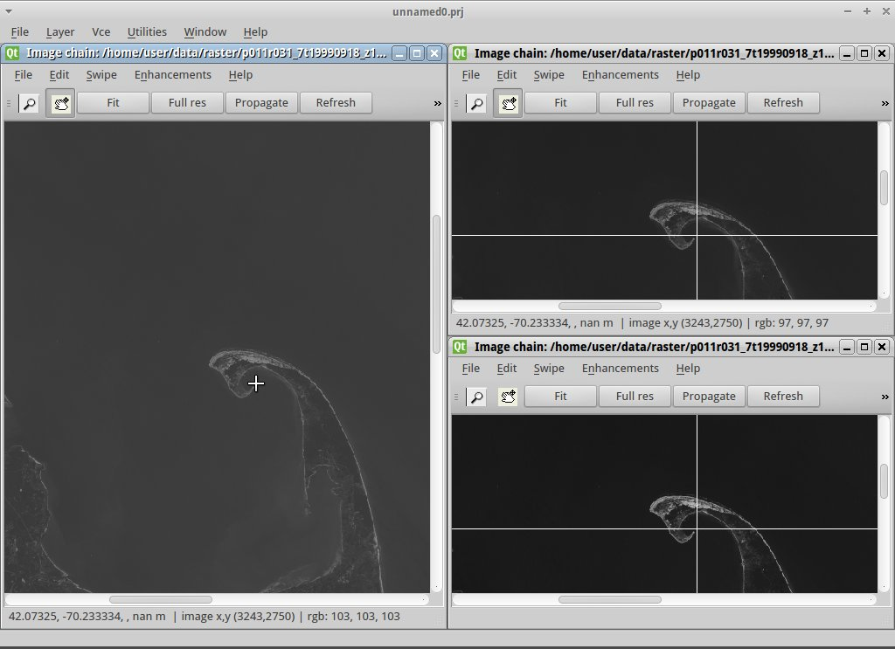

Guía de Inicio Rápido de OSSIM¶
Open Source Software Image Map (OSSIM) es un motor de alto rendimiento para la detección remota, procesamiento de imágenes, tareas de sistema de información geográfica (SIG) y fotogrametría.
Esta Guía de Inicio Rápido describe cómo:
- Vista múltiple de imágenes ráster multibanda de satélite con Imagelinker
- Cubra un mapa ráster georreferenciado en un globo 3D con ossimPlanet
Imagelinker¶
Inicie Imagelinker desde el icono de la carpeta «Herramientas espaciales» en el escritorio
Abra un archivo de imagen usando
Repetir la operación anterior para los archivos : clip20.tif and clip30.tif
Otra forma para cargar todas las imágenes a la vez es simplemente arrastrar y soltar en la ventana principal de Imagelinker
Para poner en orden las ventanas, maximizar la ventana principal y, a continuación, en la barra de menú superior ir a
Puede mantener todas las vistas de la banda satelital en sincronización haciendo click en Fit en una de las ventanas más pequeñas, después en Propagate en esa misma ventana. Trate de hacer lo mismo en la ventana grande.
Otra vez en la ventana de imagen grande asegúrese de que está pulsado el botón de zoom (lupa) y haga click en medio de la intersección del camino grande. Con la vista más cercana de la ventana, nuevamente haga click en el botón Propagate en la ventana de la imagen grande para sincronizar esa vista con otras ventanas de banda. De manera similar puede presione el botón de arrastre (icono de mano) y luego hacer click en para mover a lo largo de la carretera, y luego en el botón Propagate para alinear las demás ventanas.
{kind=link}
OssimPlanet¶
- Iniciar OssimPlanet desde su ícono en la carpeta «Desktop GIS» en el escritorio
- Seleccione para cargar una imagen LANDSAT (o simplemente arrastre y suelte la imagen en la ventana principal).
- En el panel de árbol de “Capa” en el lado izquierdo, haga click en el pequeño triángulo a la izquierda de Capas de la Imagen para expandirlo. A continuación haga doble click en
clip10. Ahora debe ver la escena zoom a ubicación de la imagen.
Nota
Para apagar la luz del día auto-shading, un-check
- Experimento con navegar por la escena con el ratón. Arrastrando las teclas del botón izquierdo del mouse; arrastrando la rueda central del mouse; y arrastrando el botón derecho del mouse puede hacer acercamientos y alejamientos.
- Si se pierde, haga doble click en la imagen de Blue Marble en el Árbol de Capas y se alejará nuevamente a la vista de todo el planeta, restableciendo la vista.
¿Qué sigue?¶
- Hemos preparado una serie de tutorials demostraciones de más capacidades de Ossim.
- Véase también la documentation incluida en este Live DVD.